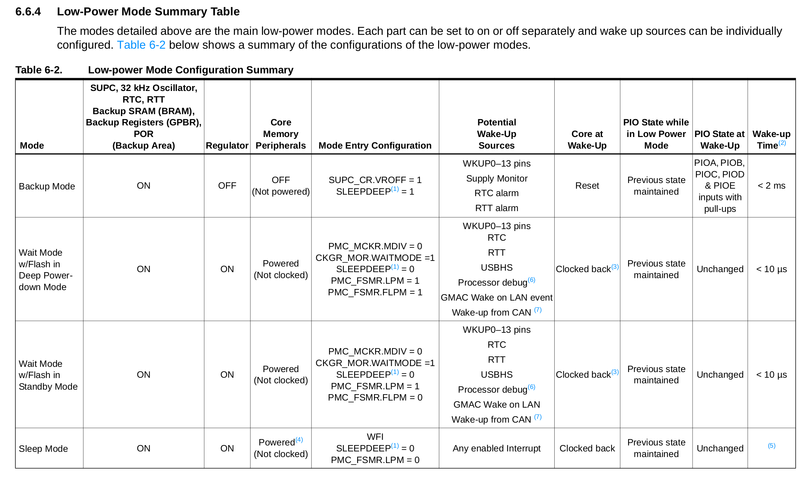

PIO - IRQ¶
| Pasta |
|---|
Lab3-PIO-IRQ |
O código exemplo SAME70-exemples/Perifericos-uC/PIO-IRQ demonstra como configurar o botão da placa e utilizar a interrupção em um pino do PIO. Vamos trabalhar com esse código de base para esse laboratório.
Entenda e execute
- Copie o exemplo
SAME70-examples/Perifericos-uC/PIO-IRQpara a pastaLab3-PIO-IRQdo seu repositório. - Estude o README desse exemplo!
- Execute o exemplo na placa!
Warning
Não continue sem ter feito a etapa anterior.
Melhorando o exemplo¶
Iremos entender melhor e começar a implementar mudanças no código de exemplo.
Bordas¶
Vamos agora modificar o código um pouco, o exemplo está funcionando com interrupção em borda de descida no pino, ou seja, a função de callback e chamada quando você aperta o botão, vamos modificar para ele operar com borda de subida (o led vai piscar quando soltar o botão).
Modifique e teste
- Mude a função que configura a interrupção do pino para operar em
PIO_IT_RISE_EDGE. - Teste na placa.
IRQ - Keep it short and simple¶
O tempo que um firmware deve ficar na interrupção deve ser o menor possível, pelos principais motivos:
- Outras interrupções de mesma prioridade irão aguardar o retorno da interrupção. O firmware irá deixar de servir de maneira rápida a diferentes interrupções se gastar tempo nelas.
- Nem todas as funções são reentrantes. Funções como
printfpodem não operar corretamente dentro de interrupções (mais de uma chamada por vez). - RTOS: As tarefas devem ser executadas em tasks e não nas interrupções, possibilitando assim um maior controle do fluxo de execução do firmware (vamos ver isso mais para frente).
FLAG¶
A solução a esse problema é realizar o processamento de uma interrupção no loop principal (while(1)), essa abordagem é muito utilizada em sistemas embarcados. E deve ser feita da forma a seguir:
- Define-se uma variável global que servirá como
flag(trueoufalse) (essa variável precisa ser do tipovolatile) - Interrupção muda status da
flag while(1)verifica status daflagpara realizar ação.while(1)zeraflag(acknowledge)
Exemplo:
/* flag */
volatile char but_flag;
/* funcao de callback/ Handler */
void but_callBack(void){
but_flag = 1;
}
void main(void){
/* inicializacao */
while(1){
// trata interrupção do botão
if(but_flag){
// trata irq
// ..
// zera flag
but_flag = 0;
}
}
}
volatile
Sempre que uma interrupção alterar uma variável global, essa deve possuir o 'pragma' /modificador volatile.
Exemplo: volatile int valADC;
Esse pragma serve para informar o compilador (no nosso caso GCC) que essa variável será modificada sem que ele saiba evitando assim que ele não a implemente.
Compiladores são projetados para otimizar programas removendo trechos ou variáveis desnecessárias. Como a função de Handler (interrupção) nunca é chamada diretamente pelo programa, o compilador pode supor que essa função não vai ser executada nunca e pode optimizar a variável que nela seria atualizada (já que não é chamada diretamente, mas sim pelo hardware quando ocorre um evento).
- Leia mais sobre volatile
ATENÇÃO: só usar volatile quando necessário
Modifique e teste
- Modifique o exemplo para piscar o led no
while(1)utilizandoflagvindo da interrupção.- Dentro do callback do botão não pode ter a função
pisca_led!
- Dentro do callback do botão não pode ter a função
- Programe e teste no HW
Low power modes¶
Trabalhar por interrupção possui duas grandes vantagens:
- Resposta quase imediata a um evento
- Possibilitar o uC entrar em modos de operação de baixo consumo energético (
sleep modes).
No caso do uC utilizado no curso são 4 modos distintos de lowpower, cada um com sua vantagem / desvantagem:
-
Active Mode: Active mode is the normal running mode with the core clock running from the fast RC oscillator, the main crystaloscillator or the PLLA. The Power Management Controller can be used to adapt the core, bus and peripheral frequencies and to enable and/or disable the peripheral clocks.
-
Backup mode: The purpose of Backup mode is to achieve the lowest power consumption possible in a system which is performing periodic wake-ups to perform tasks but not requiring fast startup time.
-
Wait mode: The purpose of Wait mode is to achieve very low power consumption while maintaining the whole device in a powered state for a startup time of less than 10 us.
-
Sleep Mode: The purpose of sleep mode is to optimize power consumption of the device versus response time. In this mode, only the core clock is stopped. The peripheral clocks can be enabled. The current consumption in this mode is application-dependent
Mais informações na secção 6.6 do datasheet
Informações importantes
- Não é qualquer interrupção que consegue tirar o uC de modos de sleep mais profundos
- Quanto mais profundo o sleep, mais tempo o uC leva para 'acordar'
- Alguns modos podem perder informações da memória RAM

Adicionando lowpower mode (ASF Wizard)¶
Para termos acessos as funções da atmel que lidam com o sleep mode devemos adicionar a biblioteca Sleep manager (service) no Atmel Studio:
ASF
ASF Wizard
Agora basta adicionar a biblioteca Sleep manager (service) ao projeto.
Entrando em lowpower¶
Agora podemos usar as funções de low power, primeiramente iremos utilizar somente o modo sleep mode via a chamada da função pmc_sleep() conforme exemplo a seguir:
void main(void){
while(1){
// trata flag
// ...
// .....
// Entra em sleep mode
// Código 'trava' aqui até ser 'acordado'
pmc_sleep(SAM_PM_SMODE_SLEEP_WFI);
}
}
Uma vez chamada essa função o uC entrará em modo sleep WFI (WaitForInterrupt), essa função é do tipo "blocante" onde execução do código é interrompida nela até que uma interrupção "acorde" o uC.
Modifique e teste
- Modifique o exemplo para entrar em modo sleep
- Programe e teste no HW
Como testar o sleepmode?
Se tivéssemos acesso aos equipamentos do laboratório poderíamos medir a corrente consumida pelo microcontrolador antes e depois de chamar a função de sleep, porém na versão online do curso não conseguimos fazer isso.
Praticando - OLED¶
| Pasta |
|---|
Led3-OLED-PIO-IRQ |
Agora vamos usar interrupção em um outro projeto.
Copie o projeto localizado no repositório de exemplos: SAME70-examples/Screens/OLED-Xplained-Pro-SPI/ para a pasta do seu repositório da disciplina Lab3-OLED-PIO-IRQ.
Iremos trabalhar com esse exemplo que configura o OLED (que deve ser conectado na placa no EXT1) e incorporar o exemplo da interrupção aqui (vamos ampliar sua funcionalidade!).
A entrega final (conceito A) deve possuir três botões externos a placa que irão configurar a frequência na qual o LED irá piscar (via interrupção é claro). Um dos botões irá aumentar a frequência do piscar do LED e o outro irá diminuir a frequência que o LED deverá piscar. O OLED deverá exibir a frequência atual do LED.
- O código deve funcionar por interrupção nos botões e sempre que possível, entrar em sleep mode.
Conceito C¶
Agora você deve adicionar o botão 1 da placa OLED para aumentar a frequência na qual o LED irá piscar. Além disso, você precisa exibir o valor da frequência no display do OLED.
- Botão OLED1: Aumentar a frequência do LED (por IRQ)
- Exibir o valor da frequência no OLED
Tip
Pino botão:
- Lembre de sempre usar interrupção nos botões
- Consulte o manual do OLED para saber os pinos
- Consulte o diagrama de pinos que vocês receberam.
Display Oled:
- Você deve usar sprintf para formatar a string que irá exibir no OLED
- Para exibir uma string no OLED use a função
gfx_mono_draw_string
Conceito B¶
Acrescente os outros dois botões do oled (2 e 3) do OLED para:
- Botão 2: Para o pisca pisca
- Botão 3: Diminuir a frequência
Conceito A¶
Exiba no OLED não só a frequência, mas uma barra indicando quando o LED irá parar de piscar (como uma barra de progresso).
Preencher ao finalizar o lab